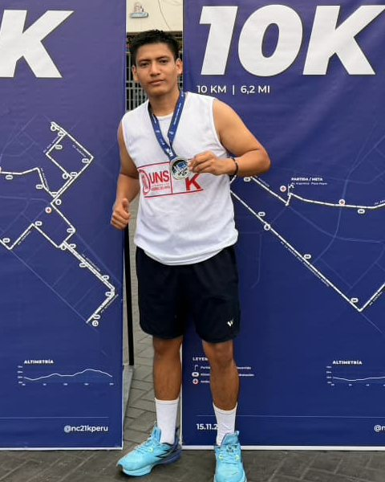
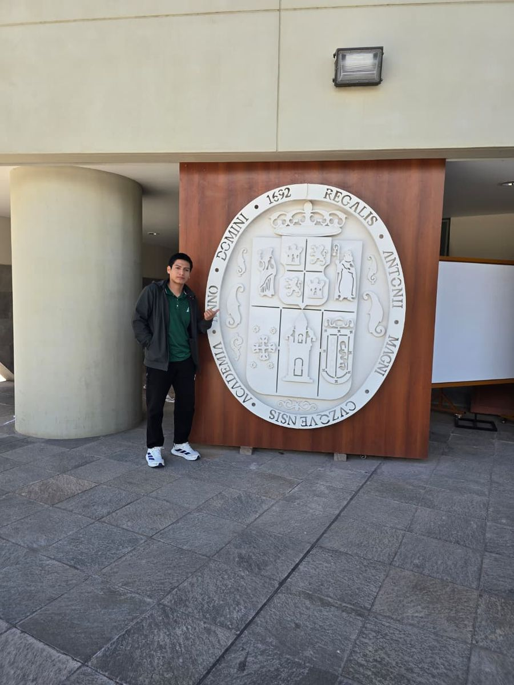

21 kilómetros en 2:12: mi NC21K
Corrí la media maratón en Nuevo Chimbote. Mejoré mi marca, aunque esperaba un poco más.
Ahora: voluntario en la Corte Superior de Justicia del Santa
Marlon Alessandro Soto Rumiche · Coishco, Áncash
Estoy en décimo ciclo de Ingeniería de Sistemas e Informática en la Universidad Nacional del Santa. Hice mis prácticas en desarrollo full stack, pasé un mes de pasantía en Cusco y estoy empezando mi propio negocio. Aquí cuento cómo va todo eso.

10.º CICLO · UNSSistemas, deporte y un negocio en marcha.
Mi recorrido
Toca un punto del mapa y mira cómo avanzo. Cada parada es una etapa.
También con el teclado: ← →


Coishco · Áncash
Soy de Coishco y estudié en el colegio Jean Piaget. Todo lo que viene después empezó aquí.
2022 · Universidad Nacional del Santa
En 2022 ingresé a Ingeniería de Sistemas e Informática en la UNS. Ahora estoy en décimo ciclo.
Abril – mayo 2026 · Chimbote
Dos meses de prácticas en desarrollo full stack: la parte que ve el usuario y la que corre en el servidor.
1 – 30 septiembre 2026 · Cusco
Pasé todo septiembre en Cusco por una pasantía nacional. Otra universidad, otra ciudad y un mes lejos de casa.
Desde octubre 2026 · Chimbote
Desde octubre soy voluntario en la Corte Superior de Justicia del Santa.
Hoy
Estoy terminando la carrera y empezando mi emprendimiento: accesorios para celular, iPhones, relojes e importaciones.
Explora
Blog
Corrí la media maratón en Nuevo Chimbote. Mejoré mi marca, aunque esperaba un poco más.
Lo más rápido es WhatsApp. Te respondo apenas pueda.